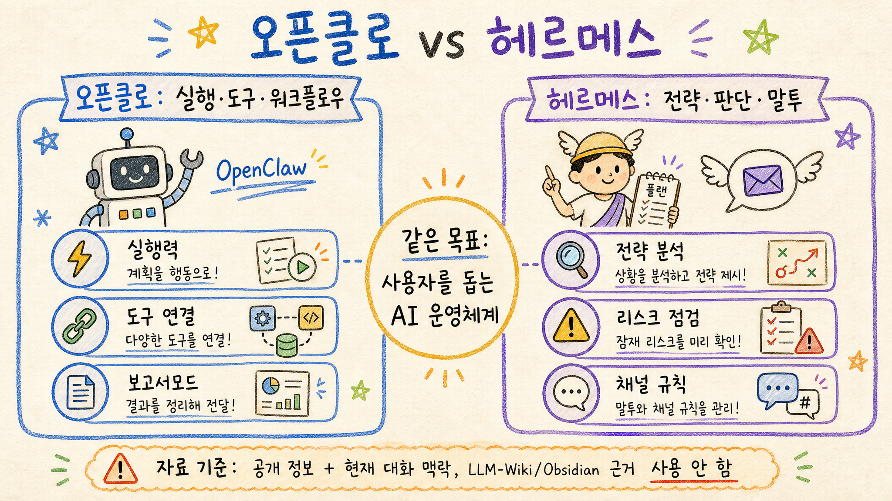
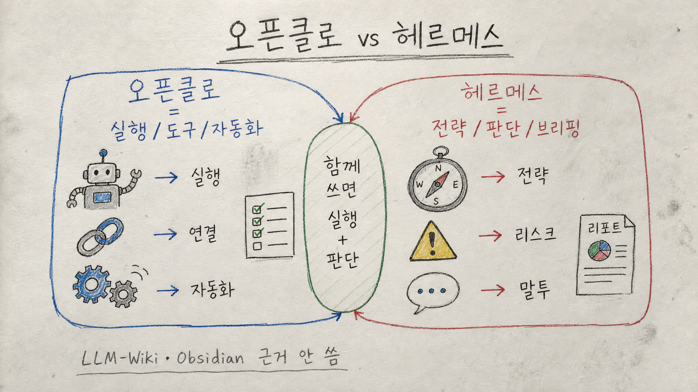
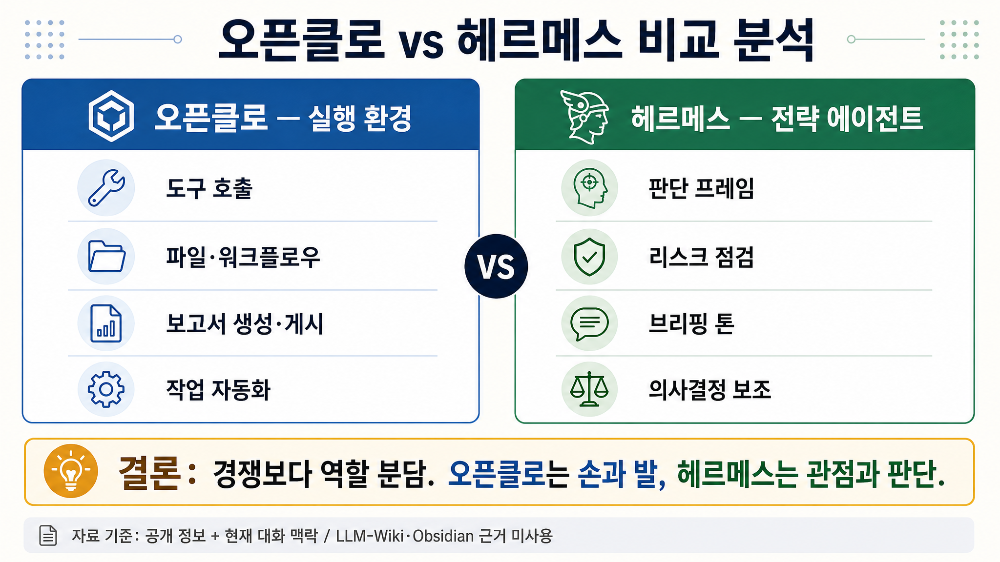

오픈클로 vs 헤르메스 비교 분석 보고서
오픈클로와 헤르메스는 “어느 쪽이 더 좋은가”로 비교하기보다, 실행 계층과 판단 계층의 역할 분담으로 보는 편이 정확하다. 오픈클로는 도구·파일·워크플로우를 움직이는 손과 발에 가깝고, 헤르메스는 전략·리스크·의사결정 프레임을 다듬는 관점에 가깝다.
핵심 결론
- 오픈클로는 실행 인프라에 가까움. 파일 작업, 이미지 생성, 보고서 게시, 자동화처럼 “실제로 처리하는 일”에 강함.
- 헤르메스는 전략 에이전트에 가까움. 현실 판단, 리스크 점검, 말투·브리핑 일관성, 의사결정 보조에 강함.
- 둘은 경쟁 관계보다 계층 관계임. 오픈클로가 작업을 실행하고, 헤르메스가 관점과 판단을 보강하는 조합이 가장 실용적임.
- 핵심 리스크는 경계 혼선임. 누가 실행하고, 누가 판단하며, 어떤 자료를 근거로 쓰는지 분리하지 않으면 공개 게시·개인정보·품질 문제가 생김.
1. 한 줄 정의
오픈클로
개인 비서 실행 환경. 사용자의 요청을 받아 도구 호출, 파일 생성·수정, 이미지 생성, GitHub Pages 게시, 작업 자동화 같은 실행을 담당하는 운영 레이어다.
헤르메스
전략·판단 에이전트. 같은 작업을 하더라도 더 비판적이고 구조적으로 보고, 리스크·판세·의사결정 프레임을 정리하는 역할에 가깝다.
2. 비교표
| 구분 | 오픈클로 | 헤르메스 |
|---|---|---|
| 핵심 역할 | 작업 실행, 도구 연결, 산출물 생성 | 판단 프레임, 전략 해석, 리스크 점검 |
| 강점 | 파일·이미지·코드·게시 작업을 실제로 끝까지 밀어붙임 | 복잡한 상황을 구조화하고, 반대 관점과 실패 시나리오를 끌어냄 |
| 보고서모드에서의 역할 | 조사, 이미지 생성, HTML 작성, GitHub Pages 게시 | 논리 구조, 결론 강도, 리스크·반론·전략적 메시지 보강 |
| 주의점 | 실행력이 강한 만큼 공개 게시·파일 작업 전 자료 경계를 엄격히 확인해야 함 | 전략적 해석이 강한 만큼 사실 근거와 추정의 경계를 분리해야 함 |
| 좋은 조합 | 헤르메스가 판단 프레임을 세우고, 오픈클로가 실행·게시까지 마무리하는 구조 | |
3. 역할 분담 관점
AI 비서를 오래 쓰려면 “똑똑한 답변”보다 역할 경계가 중요하다. 오픈클로가 모든 판단까지 떠안으면 실행 중 실수가 커질 수 있고, 헤르메스가 실행까지 직접 담당한다고 가정하면 실제 산출물 관리가 흐려질 수 있다.
따라서 가장 안정적인 구조는 다음과 같다.
- 헤르메스: 문제 정의, 판단 기준, 리스크, 반대의견 정리
- 오픈클로: 자료 수집 범위 확인, 이미지 생성, 문서화, 게시, 검증
- 공통 안전선: 개인 자료·LLM-Wiki·Obsidian·메모리는 보고서 내용 근거로 사용하지 않음
4. 약점과 실패 시나리오
- 경계 혼선: “전략 에이전트”와 “실행 에이전트” 역할이 섞이면 책임과 검증 위치가 흐려진다.
- 근거 오염: 공개 보고서에 개인 자료나 비공개 위키 맥락이 섞이면 신뢰성과 개인정보 안전이 동시에 깨진다.
- 브랜드 혼동: 오픈클로와 헤르메스의 말투·정체성이 섞이면 사용자는 어느 에이전트의 판단인지 알기 어렵다.
- 자동화 과신: 실행 자동화가 강할수록 게시 전 소스 제한, 링크 검증, 이미지 포함 여부 확인이 더 중요하다.
5. 추천 운영안
- 오픈클로 = 실행 담당으로 둔다. 파일, 이미지, 게시, 검증을 맡긴다.
- 헤르메스 = 전략 담당으로 둔다. 결론, 리스크, 반론, 의사결정 프레임을 맡긴다.
- 보고서모드 자료 원칙은 둘 다 동일하게 적용한다. 공개 웹·공개 자료·현재 대화에서 제공된 공개 가능한 내용만 사용한다.
- 완료 기준은 URL과 검증이다. 공개 가능한 보고서는 GitHub Pages 링크 없이 완료 처리하지 않는다.
6. 인포그래픽 3종
보고서모드1 — 기본 손그림 스타일

미색 종이·색연필·크레용 느낌의 학습 노트형 비교.
보고서모드2 — 저숙련 종이 스캔 손그림

삐뚤빼뚤한 손글씨와 실제 스캔 종이 느낌을 강조한 버전.
보고서모드3 — 깔끔한 고해상도 정보형

2열 비교표와 결론을 중심으로 정리한 정보형 버전.
자료 사용 기준
이 보고서는 공개 가능한 일반 정보와 현재 대화에서 제공된 맥락만 기준으로 작성했다. 보고서 내용의 근거로 주인님의 LLM-Wiki, Obsidian Vault, 메모리, 개인 파일, 비공개 자료를 사용하지 않았다. 운영 템플릿·저장소 구조·렌더링/게시 방식은 작업 수행을 위한 도구로만 사용했다.